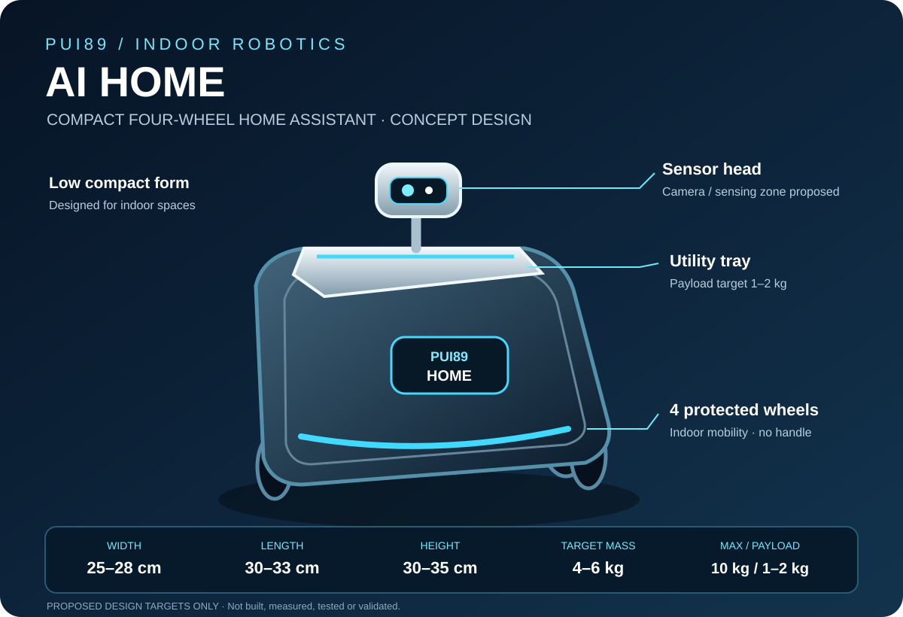

Width 25–28 cm · depth 30–33 cm · height 30–35 cm
DEVELOPMENT STAGEStage 1 of 5Evidence-based development stageArchitecture defined · early software foundation
PUI89 / INDOOR HOME ASSISTANT
PUI89 AI Home Assistant Robot
An indoor mobile assistant concept for home-condition awareness and everyday support.
Concept stage · not built or validated
Compact indoor robot — proposed design targets
4–6 kg target, including battery. 10 kg is the maximum design ceiling, not the target.
1–2 kg, separate from robot mass and subject to stability and drive testing.
Four wheels · indoor use · supervised operation
Design direction: compact, low-profile and serviceable. Keep heavy components low; minimise unnecessary brackets, duplicate electronics and optional accessories. Preserve structural strength, battery/electrical protection, wheel guarding, ventilation and safe stopping.
Status: PROPOSED / NOT MEASURED / NOT VALIDATED. Dimensions and mass are design targets, not prototype measurements. The complete envelope includes wheels and fixed sensor housings. Robot mass includes all installed hardware; payload is separate. CAD fit, component-level mass ledger, centre of gravity, stopping, thermal and payload tests are required before design freeze.
Pricing and prototype cost
Retail price: not announced. AI HOME is still at the design and hardware-research stage; there is no validated prototype or complete bill of materials.
Public component listings are being compared, but partial component subtotals are not a complete robot cost or a product selling price. Battery, drive electronics, chassis, enclosure, wiring, safety hardware, fabrication, testing, warranty, support, taxes and delivery must be costed before a responsible price can be published.
PUI89 will publish a price only after a traceable BOM and Thailand landed-cost estimate have been reviewed. No orders or sales are currently offered.
PUI89 · PROJECT DEVELOPMENT RECORD
PUI89 AI HOME — Development Status
Evidence-led status for the indoor home assistant project. This record distinguishes documented software work from unverified physical capabilities.
DEVELOPMENT STAGEStage 2 of 5
Product requirements, software contracts and early adapter/test foundations are documented. No physical robot or validated home-safety performance is established.
DOCUMENTED EVIDENCEEarly requirements, architecture and software foundations; no hardware is currently available for a physical prototype.
LIMITATIONS & UNVALIDATED CAPABILITIESWorking software demonstrator, real sensor integration, alarm safety, reliability testing and later physical validation remain outstanding.
NEXT MILESTONEComplete a software-only home-safety demonstrator using documented mock sensor inputs and explicit failure states.
First evidence-based baseline: 7 November 2026GitHub ↗
Compact indoor assistant concept
AI HOME is a space-conscious, four-wheel indoor assistant concept intended to help people monitor selected home conditions and review changes over time.
Compact indoor mobility designed around everyday living spaces.
Evidence-led awareness of selected home conditions, with uncertainty and missing information made visible.
People review alerts and make consequential decisions; the concept does not replace certified household safety equipment.
Development status: Proposed compact design target: 25–28 cm wide × 30–33 cm deep × 30–35 cm high; 4–6 kg complete robot target; 10 kg maximum design ceiling; 1–2 kg initial payload target. These values are proposed, not measured or validated.
Engineering priorities: stability, safe low-speed movement, obstacle awareness, supervised stopping, battery and charging safety, thermal management, maintainability and privacy-by-design.
Limitations: No water/fire rating, IP rating, certified alarm function or physical safety performance is established. Certified household protection devices remain primary. AI HOME is the indoor home-condition assistant; AI NOMAD is the separate portable travel/outdoor product.
At a glance
Software-first concept for observing household conditions and presenting evidence-based alerts.
Uncertain or conflicting observations are reported for resident review.
Any future movement remains bounded and supervised.
What it is designed to help monitor
Water and moisture
Leak indicators, damp areas and humidity changes that may need inspection.
Heat and fire-related signals
Environmental evidence and certified alarm interfaces; certified alarms remain primary.
Electrical and equipment conditions
Permitted non-invasive indicators only. No wiring, breaker or appliance control.
Changes around the home
Temperature, light, sound and visible surface changes, without structural diagnosis.
How it should work
1. Observe
Collect permitted readings with timestamps and sensor-health information.
2. Check
Flag missing, stale, noisy or conflicting evidence.
3. Explain
Separate observations from interpretations and state what is unknown.
4. Support
Provide clear reports and human-reviewed suggestions, not autonomous household actions.
Compact internal layout and target mass plan
The revised proposed body envelope is 25–28 cm wide × 30–33 cm deep × 30–35 cm high. Keep the battery and other heavy components low and near the centreline; use CAD and exact component datasheets to determine final packaging, thermal paths and service access.
4–6 kg
Includes battery, chassis, wheels, motors, electronics, sensors, wiring and enclosure.
10 kg
Upper engineering limit, not the target build mass.
1–2 kg
Additional to robot mass; requires stability, drive and stopping validation.
BOM status: category-level only. Exact models, quantities, supplier, price, origin, licence, safety approvals and measured weights remain TBD. No purchases or supplier contact are authorised.
Read the revised compact layout and 4–6 kg target mass plan ↗
Design gate: verify the CAD envelope, component-level mass ledger, measured assembled mass, centre of gravity, tip resistance, payload, drive/braking calculations, battery/thermal safety, sensor coverage, ventilation, privacy and supervised safe-stop behaviour before freezing the design.
Shared PUI89 AI Core
Planned integration uses versioned observations and world-state records, evidence provenance, uncertainty handling, safety gates and human-reviewed recommendations. HOME and AI NOMAD remain separate products with different hardware and validation requirements.
Safety and privacy
- Certified smoke, fire, carbon-monoxide and electrical protection devices remain the primary safeguards.
- Never delay evacuation or emergency procedures for AI analysis.
- Do not control locks, breakers, valves, cooking appliances or certified alarms.
- Stop when localization, obstacle evidence or battery state is uncertain.
- Minimise personal data; avoid unnecessary indoor video, face recognition and conversation recording.
This concept is not a certified alarm, building inspector or diagnostic system. No real-world safety performance is claimed.
Engineering foundation
Technical requirements and verification are being defined before hardware selection or physical testing.
- Product requirements
- System architecture
- Safety and cybersecurity requirements
- Verification and validation plan
- Hardware specification and selection criteria
Status: documentation baseline only. Requirements are proposed, tests have not been claimed as executed, and hardware selection is research-only.
Development plan
Requirements and hazard analysis → software contracts and synthetic tests → evidence reports → simulation → carefully reviewed sensor integration.
Current status: early software foundation. A completed robot, real sensor integration, trained model accuracy and physical safety performance have not been established.
Project website
Scan the QR code or open the English or Thai page.

PUI89 SHARED INTELLIGENCE · PROJECT-SPECIFIC SCOPE
Perception & Task Intelligence
Project-specific capabilities built on the PUI89 Shared AI Core.
Perception
- Indoor room and scene understanding
- Common object and person detection
- Obstacle and free-space perception
- Visible change detection for leaks, dampness or unusual conditions
- Permitted environmental sensor fusion (temperature, humidity, etc.)
- Confidence, sensor-health and privacy-aware observation
Tasks
- Monitor only explicitly selected household conditions
- Detect visible changes and unusual sensor readings
- Locate selected objects on request where supported
- Issue evidence-based alerts for resident review
- Track alert acknowledgement and task completion
- Report missing, stale or conflicting sensor inputs
Future research
Low-power indoor perception, privacy-preserving local processing, robust sensor-health checks, safe human-robot interaction and carefully validated interfaces to certified alarms. AI must not replace certified safety devices.
Evidence status: Proposed product scope, not a claim that every capability is implemented. Report code, software tests, dataset evaluation and real-world validation separately.